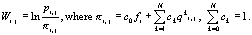

|
Andrew Laskin[1], Eugene Korotkov[2], Nikolai Kudryashov[3]
Keywords: periodicity, alignment, profile analysis, protein kinase, repeat
1 Introduction
The periodicity investigation has reasonable biological meaning because multiple duplications of DNA sequence fragments with subsequent substitutions, insertions and deletions of symbols could serve as the ground for evolution of genes and genomes. The discovery of periodicity in active sites of enzymes could witness that in the past genes could be built up by simple repeating of certain relatively short DNA fragments. We may also suppose that such structure of active sites of proteins could mean possible participation of latent periodicity of amino acid sequences in choice and stabilization of the proper conformation of protein’s globule.
Symbolic sequences may contain so called latent periodicity [1-5], where significant homology between periods is not observed and periodicity can be only revealed as a property of a certain set of periods. These types of periodicity, previously found in many DNA and protein sequences, can be extensively omitted when using dynamic programming-based techniques.
2 Methods
Previously [4,5] we identified latent periodicity in nearly 10000 known amino acid sequences. Then these identified periodicities provided the initial data for searching for given periodicities with the possibility of insertions and deletions. Namely, we transformed frequencies of occurrence of different amino acids at different positions in a period (repeat) into position-specific scores with log-odds formula. Then obtained “repeat profiles” were used in Swiss-Prot search for similar nearly-periodic subsequences using the cyclic alignment technique [6]. Search results were used to create a new profile, in which additional information about occurrences of amino acids in a class of sequences is incorporated. This was done using the noise decomposition technique.
Noise decomposition is a technique used to distinguish between similar sequence motifs. It is applicable when search results come out in the form of mixture of sequences with different relative functions. For example, using the search pattern “...-A-[XY]-B-...” for some site we can obtain a set of subsequences “...AXB...” and “...AYB...”. If we remodel this site from this set, using simple probabilistic model of protein sequences, we will get the same pattern “...-A-[XY]-B-...”, i.e. we are not gaining additional information about the site.
Noise decomposition changes the probabilistic representation of sequence data bank as follows. Let us represent it as a mixture of “uncorrelated noise”, composed of sequences, having no homology to the sites under investigation and characterized by “background” symbol probabilities fi, and “correlated noise”, composed of sequences, generally unwanted but having sufficient level of homology to be found with profile analysis together with the desired sequences. The main difference of correlated noise for us is that the distribution of amino acid occurrences over different positions of profile alignment is not casual, because we propose the existence of a pattern (or patterns) of these false positives. The resulting noise will apparently be position-specific, let’s denote its distribution pi.j.
The main idea is that log-odds formula for position-specific score determination is changed to:

Here qki,j are frequencies of occurrence of amino acids and ck are mixing parameters for different types of correlated noise; pi,j are amino acid frequencies for useful signals. They can be estimated from search results divided into subgroups by keyword analysis (in annotated data banks) or clustering.
3 Results
We applied the cyclic alignment and noise decomposition techniques to latent periodicity of length 18 amino acids, previously found in protein kinases using information decomposition, without insertions and deletions. The periodicity was located in the protein kinase catalytic domains, so we suggested that the periodicity of 18 amino acids is a characteristic property of protein kinase active sites. Swiss-Prot search with this cyclic profile provided about 100 results from serine-threonine and tyrosine kinase superfamilies.
We used noise decomposition to distinguish between serine-threonine and tyrosine kinase motifs. For one case, we considered serine-threonine kinases as expected result and tyrosine kinases as a type of correlated noise, and vice versa for another case. This resulted in two cyclic position-weight matrices (new cyclic profiles), one being specific for periodicity in serine-threonine kinases and another for periodicity in tyrosine kinases. Subsequent iterative refinements of these matrices [6] allowed us to find latent periodicity in total 774 serine-threonine protein kinases (out of 963) and 301 tyrosine protein kinases (out of 369) (results are obtained using Swiss-Prot release 40 and the appropriate cyclic profile). The profiles identify only 8 proteins, which are not protein kinases of either type; 52 kinases were identified with both profiles. We could not achieve such results without noise decomposition (i.e. using training sets only). The position-specific matrices and reports on search results may be found at http://periodicity.fromru.com.
Protein kinases turned out to be another important enzyme type with latent periodicity-based catalytic center. More information about feebly marked repeats (latent periods) and their structural and functional significance may be found at http://periodicity.fromru.com.
4 References
[1] Korotkov, E.V. and Korotkova, M.A. 1995. DNA regions with latent periodicity in some human clones. DNA Seq., 5, 353-358.
[2] Korotkov, E.V., Korotkova, M.A., Tulko, J.S. 1997. Latent sequence periodicity of some oncogenes and DNA-binding protein genes. CABIOS, 13:37-44.
[3] Chaley, M.B., Korotkov, E.V. and Skryabin, K.G. 1999. Method revealing latent periodicity of the nucleotide sequences for a case of small samples. DNA Res., 6, 153-163.
[4] Korotkov, E.V., Korotkova, M.A., Rudenko, V.M. and Skryabin, K.G. 1999. Latent periodicity regions in amino acid sequences. Mol. Biol., 33, 611-617.
[5] Korotkova, M.A., Korotkov, E.V. and Rudenko, V.M. 1999. Latent periodicity of protein sequences. J. Mol. Model., 5, 103-115.
[6] Laskin A.A., Korotkov E.V., Chaley M.B., Kudryashov N.A. Locally optimal method of cyclic alignment for detection of latent periodicity in genetic sequences and its application to identification of the NAD-binding sites in proteins. Mol Biol,(Russian) 2003, in press.
[1] Moscow Physical Engineering Institute, Kashirskoe shosse 31, 115409, Moscow, Russia; Bioengineering Center of Russian Academy of Sciences, Prospect 60-tya Oktyabrya, 7/1, 117312, Moscow, Russia.
[2] Moscow Physical Engineering Institute, Kashirskoe shosse 31, 115409, Moscow, Russia; Bioengineering Center of Russian Academy of Sciences, Prospect 60-tya Oktyabrya, 7/1, 117312, Moscow, Russia. E-mail: katrin2@biengi.ac.ru
[3] Moscow Physical Engineering Institute, Kashirskoe shosse 31, 115409, Moscow, Russia.